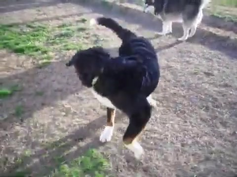
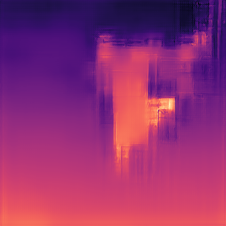
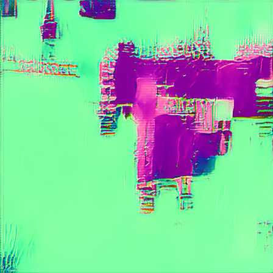
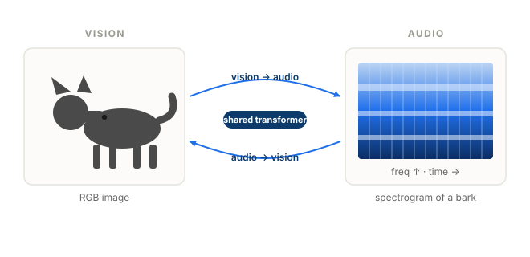
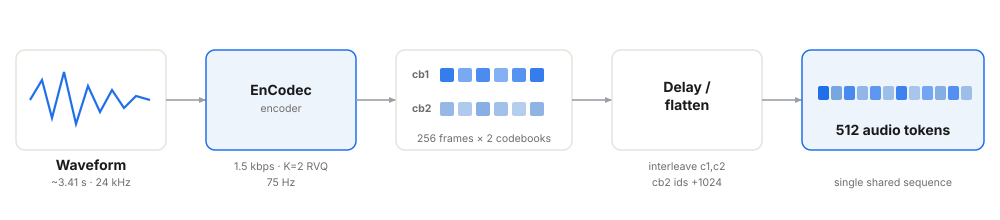
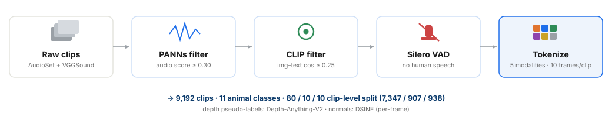
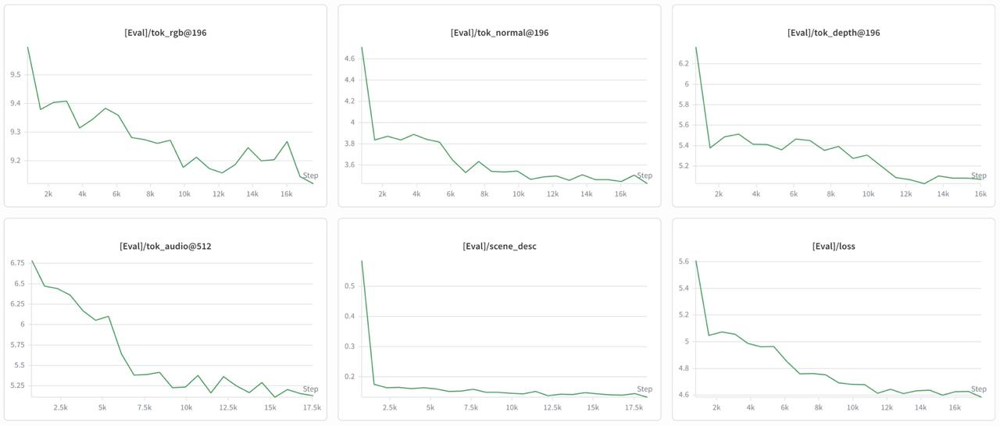
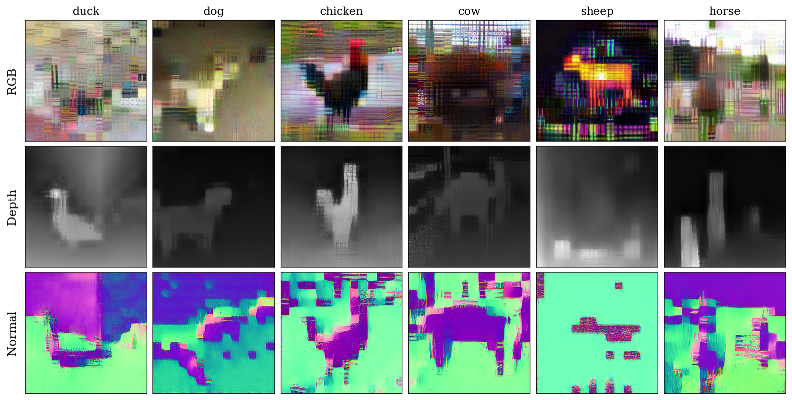
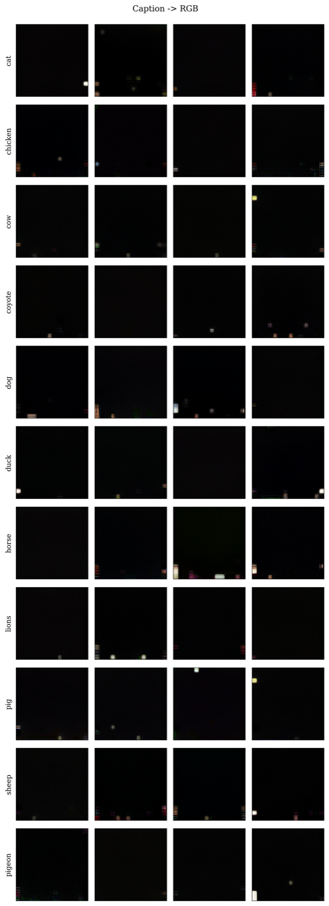
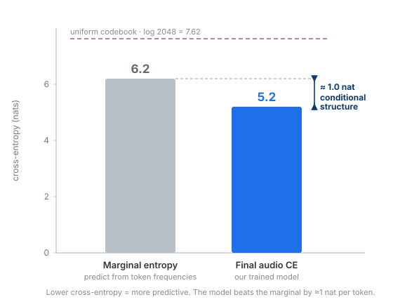

Nano4M-Audio extends the 4M encoder–decoder transformer (d6-6w512, ~96M parameters)
with audio as a fifth modality, tokenized via EnCodec with a MusicGen-style delay/flatten
pattern, and trained jointly with RGB, depth, surface normals, and a class caption under
Dirichlet masking — with contiguous span masking on the temporal audio
stream as the only training-side change to the recipe.
Summary
Recent multimodal foundation models like 4M unify vision and language under a single
masked-modeling objective. Yet audio — temporal, high-frequency, and acoustically rich —
remains conspicuously absent. We ask a precise question: can the 4M framework absorb audio
as a fifth modality at the scale of an academic project (~10⁴ paired clips, ~10⁸ parameters)?
We extend nano4M (~96M parameters) with audio via EnCodec tokenization, contiguous span
masking for temporal locality, and a self-built dataset of 9,192 animal-vocalization
clips cleaned through a three-stage pipeline (PANNs, CLIP, and Silero
voice-activity detection) across 11 classes. The pipeline trains cleanly end-to-end on a
single H100 in ~1h10.
Structural modalities (depth, surface normals) converge strongly — their reconstructions
are visibly correct. Caption-conditioned RGB generation produces recognizable class outputs.
Audio learns conditional structure at the token level (cross-entropy ~1 nat below the
marginal codebook entropy), but this signal does not lift to usable cross-modal
audio↔vision generation. We diagnose three specific causes — a train/inference masking
mismatch, an acoustic-only EnCodec tokenizer, and a data-scale gap relative to the
contrastive audio-visual literature — and propose a concrete validation path for each.
The diagnostic, not the generation, is the contribution.
From a clip to a training example
Every training example begins as a noisy ten-second web clip. A three-stage oracle — PANNs on
the audio, CLIP on the frames, and Silero VAD for silence — keeps only the clips where sound,
image, and the absence of speech agree on the class. Each survivor is decoded into ten keyframes
and five aligned token streams — RGB, depth, surface normals, EnCodec audio, and a class caption
— that the model consumes jointly.
A real clip — class dog (AudioSet 6srAUdAG-8c @ 27 s), kept by the oracle at PANNs 1.08 · CLIP 0.30 · VAD 0.0.

RGBreal keyframe

DepthDAv2 → 4M-8k

NormalsDSINE → 4M-8k
AudioEnCodec · 512 tok
“a photo of a dog”
CaptionGPT-2 BPE
One real clip, in full. The player is its ten keyframes over the ground-truth audio; the five
tiles are the aligned streams the model consumes — the real RGB keyframe, plus depth, surface
normals, and audio decoded from the exact tokens (depth/normals via the 4M-8k
DiVAE, audio via EnCodec). One training clip, shown to make the encoding concrete.
The problem
A unified multimodal model is only as general as the modalities it can host. The 4M
family tokenizes RGB, depth, surface normals, semantic maps, and captions into discrete
sequences and trains a single transformer to predict any subset from any other. Every
one of those modalities is visual, derived from rendered or curated imagery.
A real-world temporal signal — audio — is the natural omission, and the obvious test of
whether the recipe generalizes beyond vision.
Audio is a deliberate stress test. It is temporal rather than spatial, so the
random masking that 4M tailors to spatial token grids lets a decoder copy local context
instead of learning long-range structure. It is high-frequency and sourced from noisy
web video, and a strong neural codec is itself lossy: raw codec tokens are
semantically opaque, so the model must learn class-level meaning on top of
acoustic codes.
This frames our hypothesis. A shared transformer can absorb audio at small scale
only if the tokenizer carries semantics and the dataset is large
enough for cross-modal alignment to emerge. We restrict the problem to animal sounds,
where each class has a distinctive acoustic signature and a visually identifiable
subject — giving naturally paired clips and a clean classification oracle.

The goal is bidirectional: a single shared transformer should map a dog image to its bark and back, with no objective specific to either direction.
Method
Architecture
We use nano4M, the course re-implementation of the 4M recipe: a d6-6w512
encoder–decoder transformer (~96M parameters, head dimension 64) that is architecturally
identical to the visual baseline — we add a fifth modality without touching the
network. All modalities share one unified token vocabulary (~50,304 ids); modality and
position embeddings are added to the token embeddings, and the per-modality cross-entropy
is length-normalized so the 512-token audio sequence does not dominate the ~5-token caption.
The nano4M-Audio pipeline. A single d6-6w512 encoder–decoder (~96M
parameters) over five tokenized, aligned modality streams sharing one vocabulary. Each
clip is tokenized by a dedicated per-modality tokenizer (4M DiVAEs for the spatial
modalities, EnCodec for audio, GPT-2 BPE for the caption). Dirichlet masking allocates
input/target tokens at random across modalities, with the sole exception of span masking
on the temporal audio stream. Per-modality loss averaging keeps the long audio sequence
from dominating the short caption.
The five tokenized modalities and their shared-vocabulary footprint.
Modality
Tokenizer
Shape
Vocab
tok_rgb@196
4M-16k DiVAE
[10, 196]
16,384
tok_audio@512
EnCodec 24k, K=2
[10, 512]
2,048
tok_depth@196
DAv2 → 4M-8k
[10, 196]
8,192
tok_normal@196
DSINE → 4M-8k
[10, 196]
8,192
scene_desc
GPT-2 BPE
list
50,304
Audio tokenization
Audio is tokenized with EnCodec at 24 kHz and 1.5 kbps, using K=2 residual-VQ
codebooks at 75 Hz. A ~3.41 s clip yields 256 frames over two codebooks, which we
flatten to a length-512 sequence by interleaving the codebooks (a MusicGen-style
delay/flatten pattern) and offsetting codebook 2 by +1024 so all 2,048 audio ids stay
distinct in the shared vocabulary. We deliberately allocate 512 tokens to audio versus 196
to RGB, prioritizing acoustic context — the project's central focus.
EnCodec optimizes for reconstruction, not semantic identity — a
tension we return to in the diagnostic.

Audio tokenization: a 3.41 s waveform becomes 256 frames over two RVQ codebooks, delay-flattened (codebook 2 offset by +1024) into a single 512-token sequence the transformer consumes alongside the visual tokens.
Dataset construction
We query AudioSet and VGGSound for 11 animal classes (pig, sheep, dog, cat, horse, cow,
chicken, duck, pigeon, coyote, lion). Clips pass three oracle filters: a PANNs audio
score ≥ 0.30 on class-specific indices, a CLIP image–text cosine ≥ 0.25 for the
best of 10 frames, and a Silero voice-activity check that rejects any human speech. After
deduplication across sources we obtain 9,192 clips, split at the
clip level and stratified by class×source into 7,347 / 907 / 938 train / val /
test to prevent leakage. Each clip provides 10 keyframes, decoupling visual diversity
from audio uniqueness; depth and normal targets are pseudo-labeled by Depth-Anything-V2
and DSINE and quantized by 4M-8k DiVAEs.

Three oracle filters (PANNs, CLIP, Silero VAD) clean web-sourced clips before five-modality tokenization, yielding a leakage-free clip-level split.
Training
We train for 18,311 steps (batch 64, ~600M tokens, ~1h10 on a single
H100). Input and target tokens are allocated by 4M Dirichlet masking, with one change:
because audio is temporal, random masking lets the decoder copy adjacent frames, so the
audio stream is masked in contiguous spans (stride 2, aligned to codebook
pairs) for both input and target. We use a cosine schedule (10⁻⁴→10⁻⁶, 916 warmup steps),
AdamW (0.9, 0.95), weight decay 0.05, and gradient clipping 1.0. The final run is fp32: bf16
produced NaNs in the unified 50k-vocab softmax, and fp32 fixed it. The seed is fixed and the
deterministic split is released with the code.
What worked: structural modalities
Depth and surface normals converge cleanly. Reconstructions are visibly correct, validating
that the 4M framework absorbs new structural modalities with minimal modification.
Across 18,311 steps, depth eval cross-entropy falls ~1.2 nats (~6.3 → 5.1) and normals fall
~1.2 nats (~4.7 → 3.5), both monotonically. Training and validation track tightly throughout
and validation never exceeds training — the clip-level split eliminated the frame-level
leakage we saw in early runs. Four of five modalities converge cleanly; RGB is the hardest
and plateaus ~0.45 nats below random, reflecting noisy YouTube imagery and a dense 16k vocab.

Per-modality eval cross-entropy over 18,311 steps. Train (solid) and val (dashed) track
tightly — clip-level stratification eliminates frame-level leakage. Four of five
modalities converge cleanly; RGB plateaus ~0.45 nats from random.

Depth and normal reconstructions on held-out test samples. Animal silhouettes are clearly
distinguishable in both modalities — the model learned visual structure conditional on RGB
tokens without ever seeing ground-truth depth or normal labels (pseudo-labels via
Depth-Anything-V2 and DSINE). RGB→depth and RGB→normal token prediction each reach ~20%
token-level top-1 accuracy, far above a random-token baseline; pixel-space PSNR averages
~21 dB (tokenizer domain shift), but the cross-modal results are measured directly in
token space and are unaffected.
Cross-modal generation
Given a strong conditioning signal, the model generates the corresponding visual output.
This isolates the audio failure as specifically about audio, not about the generative
framework itself.
Before attributing any failure to audio, we validate the generation infrastructure in four
directions the original 4M handles canonically: caption→RGB, RGB→depth, RGB→normal, and
RGB→caption. For caption→RGB we condition on the class-caption template
"a photo of a <class>" and generate the 196 RGB tokens with 8-iteration
MaskGIT-style decoding, decoding to pixels through the 4M-16k DiVAE. Each direction is scored
by a metric tailored to its target: an external ImageNet ResNet-50 top-5 hit for caption→RGB,
SSIM for depth, cosine similarity for normals, and exact class match for the caption.

Caption-conditioned RGB generation on held-out captions. Images are imperfect but
class-identifiable, validated by an external ImageNet ResNet-50 top-5 hit
(XX%;
random ~0.5%). This confirms the iterative generation framework functions when the
conditioning carries class information — the logical pivot for the audio analysis that
follows.
The contrast that matters. The same MaskGIT procedure that yields
class-identifiable images from a caption (ImageNet ResNet-50 top-5 hit
XX%,
random ~0.5%) yields 0% recognizable images from audio (over 80 samples,
random ~5%). Identical decoder, identical objective — only the conditioning modality
changes. The bottleneck is audio, not the framework.
The audio story
Audio is the modality where our central hypothesis is most precisely tested — and where it
partially fails in an informative way.
What the model learns
At the token level, audio genuinely learns. Its eval cross-entropy settles at
5.2 nats, below the empirical marginal entropy of the EnCodec codebook on
our data (~6.2 nats, itself below log 2,048 = 7.62 because the token
distribution is far from uniform). A model that ignored every other modality and predicted
from the marginal would score 6.2; ours scores 5.2 — about 1 nat of conditional
structure per audio token. This is real, non-trivial cross-modal learning, not
memorization.

The model captures ~1 nat of conditional information per audio token beyond a marginal predictor — measurable token-level learning.
Where it stops
That token-level signal does not lift to cross-modal behavior. Audio-only class prediction
reaches 10.4% top-1 (chance 9.1%) and cross-modal retrieval peaks at R@5 = 4.5% (chance
2.5%). Three acoustically distinct classes are clearly learned — pig and sheep at 5.1× chance,
dog at 2.4× — while ambiguous classes collapse systematically onto neighbours (the bird
cluster chicken/duck/pigeon, the canid cluster coyote/lion→dog). Generation mode-collapses
in both directions, and a memorization probe is decisive: on audio-suffix completion, train
accuracy (2.9%) ~test accuracy (4.1%), so the model does not even memorize the training set.
Audio behavior against explicit random baselines (938-clip test set).
Probe
Model
Random
Audio → class, top-1
10.4%
9.1%
Audio → class, top-5
48.4%
45.5%
Best cross-modal retrieval, R@5
4.5%
2.5%
Audio → RGB, ImageNet top-5
0%
~5%
Memorization probe (train / test)
2.9% / 4.1%
—
The gap between "1 nat of conditional structure learned" and "generated audio
is mode-collapsed" is the central observation we set out to characterize — a sharp
asymmetry between what the encoder represents and what the decoder can generate.
Diagnostic and path forward
We isolate three causes, each backed by direct evidence and each mapped to a concrete,
validatable next experiment.
Cause 1 — Acoustic ≠ semantic
EnCodec is a neural codec optimized for waveform reconstruction. Its tokens encode
timbre, pitch, and energy envelope — not class identity. Small token errors decode to
similar textures, so the model learns acoustic regularities it cannot promote to
categories. This reconciles the 1-nat conditional gain with near-chance classification.
Lever: replace EnCodec with a semantically grounded
tokenizer (SpeechTokenizer, MERT). Validation: re-run on the same data; expect
audio classification to lift to ≥3× random.
Cause 2 — Train/inference mismatch
Random Dirichlet masking almost never presents the "predict an entire modality from
another alone" condition, so single-source MaskGIT decoding is out of distribution —
which is exactly why adding more conditioning reduces the generated energy
spread (75% → 58% of ground truth) instead of helping.
Lever: asymmetric / curriculum / modality-dropout masking
that explicitly trains single-source→full-modality prediction. Validation:
expect added context to help, not hurt, the energy spread.
Cause 3 — Below the emergence threshold
Contrastive audio-visual learning works at 10⁵–10⁶ paired clips (AudioCLIP, CLAP,
ImageBind); we operate at ~10⁴, roughly 1000× below 4M's training scale. The curves
saturate cleanly with val ≤ train throughout, so more compute on this data would not
help — the binding limit is data quantity.
Lever: scale to full VGGSound (~150k clips) and a larger
model. Validation: a 10k → 30k → 100k scan to locate the emergence threshold.
We expect the semantic tokenizer to lift classification, the masking fix to repair the
out-of-distribution generation, and the data scale to lift retrieval — together closing the
cross-modal generation gap. A quantitative generation metric (Fréchet Audio Distance via a
CLAP embedder) would replace informal listening. The contribution of this project is the
precise diagnostic and the validated framework; the next steps are concrete and well-scoped.
Listen for yourself
Six classes spanning the best- and worst-recovered cases. Ground-truth clips are diverse;
generated clips share a flattened character — the audible signature of the mode collapse the
diagnostic identifies.
Note: the clips below are synthetic placeholders for layout (varied tones for
ground truth, one flat tone for every generated cell). Replace them with EnCodec-decoded
gt_*.ogg / gen_*.ogg files before submission — see the repository README.
Class
Ground truth
Model output
Note
Pig
Best-recovered class — 5.1× chance in audio→class.
Sheep
Best-recovered class — 5.1× chance.
Dog
Learned at 2.4× chance; attractor for the canid cluster.
Cat
Acts as an attractor class in the confusion structure.
Chicken
Bird cluster — collapses with duck and pigeon.
Horse
Never recovered in audio→class (0% top-1).
Generated audio is conditioned on caption + RGB + depth + normals (audio fully masked).
Compare the spectral diversity of ground-truth clips against the consistent flattened
character of the generated outputs.
Team
Ziyad Mellal
Data pipeline and tokenizers: download, PANNs/CLIP/VAD filtering, deduplication, the clip-level splits, and the five tokenizers including the EnCodec delay-flatten audio path.
Training infrastructure and ablations: the span-masking patch, the unified-vocab config, precision and empty-encoder debugging, and the scaling and model-size sweeps.
Evaluation and figures: per-modality CE, classification, retrieval, conditional generation, the external-classifier validation, and the report figures.
This project was supervised by Jason Toskov at EPFL VILAB. We build on the
open-source 4M codebase (Mizrahi et al., NeurIPS 2023; Bachmann et al., NeurIPS 2024).
Compute was provided by the EPFL SCITAS Kuma cluster.
Citation
@misc{nano4m-audio-2026,
author = {Mellal, Ziyad and Baddour, Hassan and Farhat, Marc},
title = {Nano4M-Audio: Adding Audio as a 5th Modality to the 4M Architecture},
year = {2026},
institution = {EPFL, COM-304},
url = {https://ziyad-m97.github.io/nano4M-Audio}
}